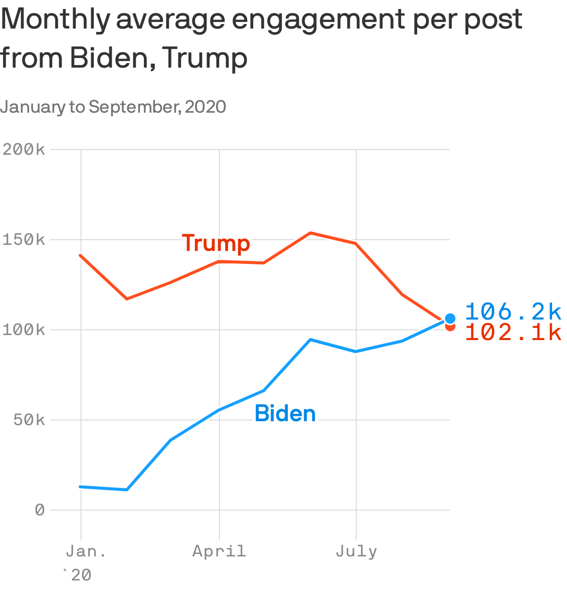

Trump's failing culture wars
Google search trends for 'Crooked Hillary' and 'Sleepy Joe' in the U.S.Google Trends index where 100 = most searches March 27 to June 26, 2016 March 29 to June 28, 2020 100 100 'crooked hillary' 50 50 'sleepy joe' 0 0 April May June April May June
President Trump built his political brand by stoking the nation's culture wars, but search data is showing us how much harder it's been for him to replicate that success while running against another white man in his 70s — and while there's a coronavirus pandemic.
The big picture: Google Trends data shows Trump's 'Sleepy Joe' name-calling isn't generating nearly the buzz 'Crooked Hillary' (or 'Little Marco') did in 2016.Base voters who relished doubting President Obama's birth certificate aren't questioning Biden's.
Why it matters: Trump's struggle to find a line of attack that takes off against Joe Biden may be driving him to diverge more politically.
Trump's attempts to find an alternate culture-war footing with Confederate statues and police defunding — highlighted by his Mount Rushmore speech on Friday — appear to face their own limits.
Between the lines: Conspiracy theories that benefitted Trump in the past often were formed in dark corners of the internet before bubbling up to more mainstream pundits — but now Big Tech is more aware than ever of its influence on society.
What's next: Trump isn't changing to meet the moment.He's moving away from comprehensive police reform, digging in as a law-and-order candidate and looking for another way to mobilize against Biden that can stick.
Posted On: 2020-07-05T00:00:00
Posted By: Shane Savitsky

Content Date: 2020-07-05
Download Date: 2021-05-15
Document ID: L0C04CD66